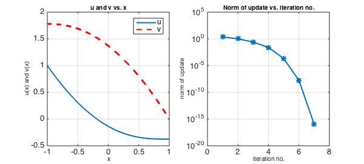
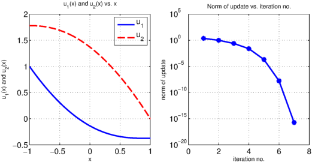

System of equations
Here is a system of two coupled nonlinear ODEs on the interval $[-1,1]$, with boundary conditions.
$$ u'' - \sin(v) = 0, $$
$$ v'' + \cos(u) = 0, $$
$$ u(-1) = 1, ~~ v'(-1) = 0, ~~ u'(1) = 0, ~~ v(1) = 0. $$
Solution using multiple variables u and v
One way you can solve a problem like this with Chebfun is to work with multiple variables, solving for two chebfuns $u$ and $v$. Here we do this, setting up the problem using anonymous functions that take two chebfuns as input and return a chebmatrix of two chebfuns as output:
N = chebop(-1, 1);
x = chebfun('x');
N.op = @(x,u,v)[ diff(u,2) - sin(v); diff(v,2) + cos(u)];
N.lbc = @(u,v)[ u-1; diff(v)];
N.rbc = @(u,v)[ v; diff(u)];
N.init = [0*x; 0*x];
[sol,info] = N\[0; 0];
nrmduvec = info.normDelta;
We extract the functions from the solution using the curly braces notation of chebmatrices and plot them:
LW = 'linewidth'; FS = 'fontsize';
u = sol{1}; v = sol{2};
figure, subplot(1,2,1), plot(u, LW, 2)
hold on, plot(v,'--r', LW, 2), hold off
title('u and v vs. x', FS, 10), legend('u', 'v')
box on, grid on
xlabel('x', FS, 10), ylabel('u(x) and v(x)', FS, 10)
subplot(1,2,2), semilogy(nrmduvec, '-*', LW, 2)
title('Norm of update vs. iteration no.', FS, 10)
box on, grid on
xlabel('iteration no.', FS, 10), ylabel('norm of update', FS, 10)

Solution using a single indexed variable u
Another way to solve the same problem is to work with a single chebmatrix variable u that has two components, u{1} and u{2}.
$$ (u_1)'' - \sin(u_2) = 0, $$
$$ (u_2)'' + \cos(u_1) = 0, $$
$$ u_1(-1) = 1, ~~ (u_2)'(-1) = 0, ~~ (u_1)'(1) = 0, ~~ u_2(1) = 0. $$
N = chebop(-1, 1);
x = chebfun('x');
N.op = @(x,u) [ diff(u{1},2) - sin(u{2}); diff(u{2},2) + cos(u{1}) ];
N.lbc = @(u)[ u{1} - 1; diff(u{2}) ];
N.rbc = @(u)[ u{2}; diff(u{1}) ];
N.init = [0*x; 0*x];
The solution process is the same as before.
[u,info] = N\[0; 0]; nrmduvec = info.normDelta;
The components of the solution, as in the problem definition, are again accessed via the curly braces notation of chebmatrices.
clf
subplot(1,2,1), plot(u{1}, LW, 2), hold on
plot(u{2}, '--r', LW, 2), hold off
title('u_1(x) and u_2(x) vs. x', FS, 10), legend('u_1', 'u_2')
box on, grid on
xlabel('x', FS, 10), ylabel('u_1(x) and u_2(x)', FS, 10)
subplot(1,2,2), semilogy(nrmduvec, '-*', LW, 2)
title('Norm of update vs. iteration no.', FS, 10)
box on, grid on
xlabel('iteration no.', FS, 10), ylabel('norm of update', FS, 10)
